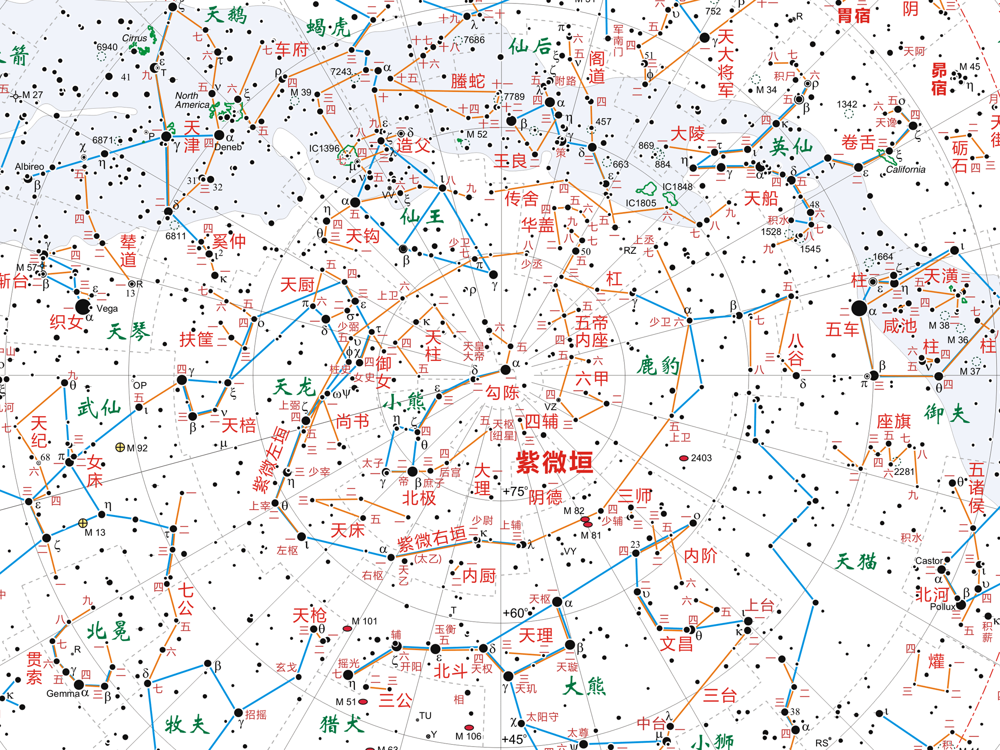
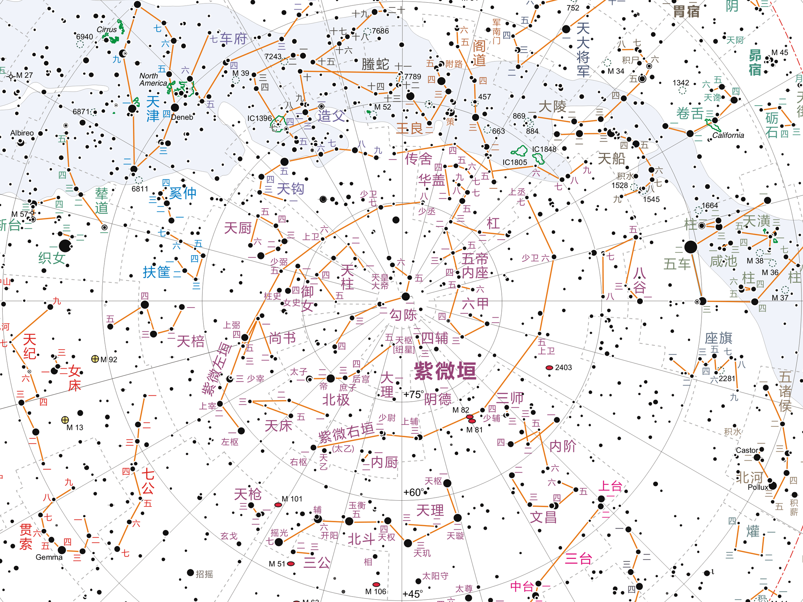
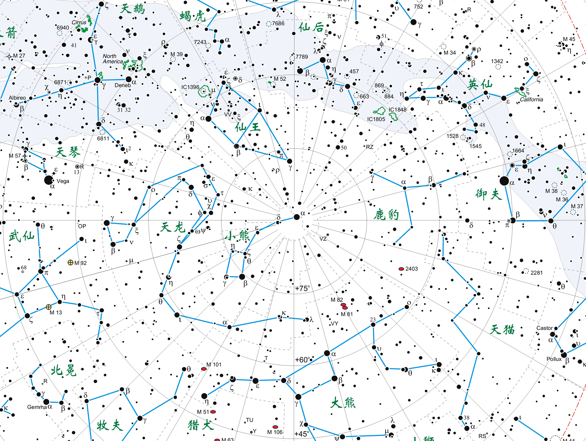
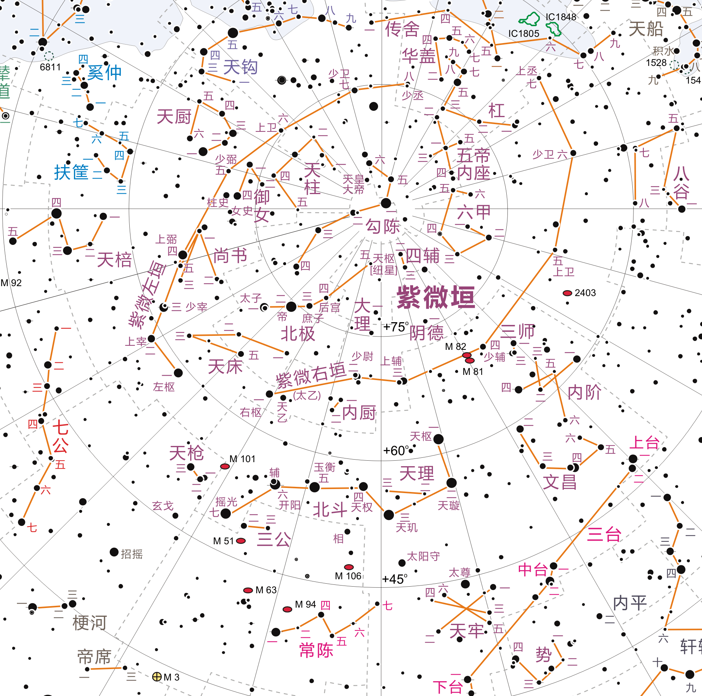

中国星官：三垣二十八宿
紫微垣(Purple Forbidden Enclosure)
- 右垣(Right wall)：右枢(Right pivot)，少尉(Second chief judge)，上辅(First minister)，少辅(Second minister)，上卫(First imperial guard)，少卫(Second imperial guard)，上丞(First prime minister)
- 左垣(Left wall)：左枢(Left pivot)，上宰(First premier)，少宰(Second premier)，上弼(First minister)，少弼(Second minister)，上卫(First imperial guard)，少卫(Second Imperial guard)，少丞(Second prime minister)
- 北极(Northern pole)：太子(Crown prince)，帝(Emperor)，庶子(Son of concubine)，后宫(Imperial concubine)，天枢(纽星，Celestial pivot)
- 北斗(Northern dipper)：天枢(Celestial pivot)，天璇(Celestial rotating jade)，天玑(Celestial shining pearl)，天权(Celestial balance)，玉衡(Jade sighting-tube)，开阳(Opener of heat)，摇光(Twinkling brilliance)
- 四辅(Four advisors)，勾陈(Curved array)，天柱(Celestial pillar)，御女(Maids-in-waiting)，尚书(Royal secretary)，天床(Celestial bed)，大理(Chief judge)，阴德(Hidden virtue)，六甲(Six JIA)，五帝内座(Interior seats of five emperors)，华盖(Canopy of the emperor)，杠(Canopy support)，内厨(Inner kitchen)，天枪(Celestial spear)，三公(Three excellencies)，天理(Judge for nobility)，天牢(Celestial prison)，势(Eunuch)，文昌(Administrative center)，内阶(Inner steps)，三师(Three top instructors)，八谷(Eight kinds of crops)，传舍(Guest house)，天厨(Celestial kitchen)，天棓(Celestial flail)
- 天皇大帝(Great Emperor of Heaven)，女史(Female protocol)，柱史(Official of royal archives)，天乙(天一，Celestial Great One)，太乙(太一，Frist Great One)，辅(Assistant)，玄戈(Somber lance)，相(Prime minister)，太阳守(Guard of the Sun)，太尊(Royals)

天文历法相关表格
十二辰、十二次、二十八宿、十二分野和太岁纪年
| 方位 |
北方玄武 |
西方白虎 |
南方朱雀 |
东方苍龙 |
| 十二辰（太阳视运动） |
丑 |
子 |
亥 |
戌 |
酉 |
申 |
未 |
午 |
巳 |
辰 |
卯 |
寅 |
| 十二次（岁星纪年） |
星纪 |
玄枵 |
娵訾 |
降娄 |
大梁 |
实沈 |
鹑首 |
鹑火 |
鹑尾 |
寿星 |
大火 |
析木 |
| 二十八宿 |
斗、牛 |
女、虚、危 |
室、壁 |
奎、娄 |
胃、昴、毕 |
觜、参 |
井、鬼 |
柳、星、张 |
翼、轸 |
角、亢 |
氐、房、心 |
尾、箕 |
| 十二分野 |
吴·扬州 |
齐·青州 |
卫·并州 |
鲁·徐州 |
赵·冀州 |
晋·益州 |
秦·雍州 |
周·三河 |
楚·荆州 |
郑·兖州 |
宋·豫州 |
燕·幽州 |
| 太岁纪年岁阴 |
寅 |
卯 |
辰 |
巳 |
午 |
未 |
申 |
酉 |
戌 |
亥 |
子 |
丑 |
| 岁名 |
摄提格 |
单阏 |
执徐 |
大荒骆 |
敦牂 |
叶洽 |
涒滩 |
作鄂 |
阉茂 |
大渊献 |
困敦 |
赤奋若 |
太岁纪年岁阳
| 天干 |
甲
| 乙
| 丙
| 丁
| 戊
| 己
| 庚
| 辛
| 壬
| 癸
|
| 尔雅岁名 |
阏逢 |
旃蒙 |
柔兆 |
强圉 |
著雍 |
屠维 |
上章 |
重光 |
玄黓 |
昭阳 |
| 史记岁名 |
焉逢 |
端蒙 |
游兆 |
彊梧 |
徒维 |
祝犁 |
商横 |
昭阳 |
横艾 |
尚章 |
太岁纪年岁阴
| 地支 |
子
| 丑
| 寅
| 卯
| 辰
| 巳
| 午
| 未
| 申
| 酉
| 戌
| 亥
|
| 尔雅岁名 |
困敦 |
赤奋若 |
摄提格 |
单阏 |
执徐 |
大荒落 |
敦牂 |
协洽 |
涒滩 |
作噩 |
阉茂 |
大渊献 |
| 史记岁名 |
困敦 |
赤奋若 |
摄提格 |
单阏 |
执徐 |
大荒骆 |
敦牂 |
叶洽 |
涒滩 |
作鄂 |
阉茂 |
大渊献 |
星宿相关古文编集
…………
（帝尧）乃命羲和，钦若昊天，历象日月星辰，敬授人时。分命羲仲，宅嵎夷，曰旸谷。寅宾出日，平秩东作。日中，星鸟，以殷仲春。厥民析，鸟兽孳尾。申命羲叔，宅南交。平秩南讹，敬致。日永，星火，以正仲夏。厥民因，鸟兽希革。分命和仲，宅西，曰昧谷。寅饯纳日，平秩西成。宵中，星虚，以殷仲秋。厥民夷，鸟兽毛毨。申命和叔，宅朔方，曰幽都。平在朔易。日短，星昴，以正仲冬。厥民隩，鸟兽氄毛。帝曰：“咨！汝羲暨和。期三百有六旬有六日，以闰月定四时，成岁。允釐百工，庶绩咸熙。”
…………
正月：……鞠则见。鞠者何？星名也。鞠则见者，岁再见尔。初昏参中。盖记时也云。斗柄县在下。言斗柄者，所以著参之中也。……
二月：……
三月：参则伏。伏者，非亡之辞也。星无时而不见，我有不见之时，故曰伏云。……
四月：昴则见。初昏南门正。南门者，星也。岁再见。壹正，盖大正所取法也。……
五月：参则见。参也者，伐星也，故尽其辞也。……初昏大火中。大火者，心也。……
六月：初昏斗柄正在上。五月大火中，六月斗柄正在上，用此见斗柄之不正当心也，盖当依依尾也。……
七月：……汉案户。汉也者，河也。案户也者，直户也，言正南北也。……初昏织女正东乡。……斗柄县在下则旦。
八月：……辰则伏。辰也者，谓星也。伏也者，入而不见也。……参中则旦。
九月：内火。内火也者，大火；大火也者，心也。……辰系于日。……
十月：……初昏南门见。南门者，星名也，及此再见矣。……织女正北乡，则旦。织女，星名也。
十一月：……日冬至，阳气至，始动，……
十二月：……
七月流火，九月授衣。一之日觱发，二之日栗烈。
无衣无褐，何以卒岁？三之日于耜，四之日举趾。同我妇子，馌彼南亩。田畯至喜。
…………
…………
大岁在甲曰阏逢，在乙曰旃蒙，在丙曰柔兆，在丁曰强圉，在戊曰著雍，在己曰屠维，在庚曰上章，在辛曰重光，在壬曰玄黓，在癸曰昭阳。——岁阳。
大岁在寅曰摄提格，在卯曰单阏，在辰曰执徐，在巳曰大荒落，在午曰敦牂，在未曰协洽，在申曰涒滩，在酉曰作噩，在戌曰阉茂，在亥曰大渊献，在子曰困敦，在丑曰赤奋若。
载，岁也。夏曰岁，商曰祀，周曰年，唐虞曰载。——岁名。
…………
寿星，角亢也。天根，氐也。天驷，房也。大辰，房心尾也。大火谓之大辰，析木谓之津。箕斗之间，汉津也。星纪，斗牵牛也。玄枵，虚也。颛顼之虚，虚也。北陆，虚也。营室谓之定。娵觜之口，营室东壁也。降娄，奎娄也。大梁，昴也。西陆，昴也。浊谓之毕，咮谓之柳。柳，鹑火也。北极谓之北辰，何鼓谓之牵牛，明星谓之启明。彗星为欃枪，奔星为彴约。——星名。
…………
孟春之月，日在营室，昏参中，旦尾中。……
仲春之月，日在奎，昏弧中，旦建星中。……
季春之月，日在胃，昏七星中，旦牵牛中。……
孟夏之月，日在毕，昏翼中，旦婺女中。……
仲夏之月，日在东井，昏亢中，旦危中。……
季夏之月，日在柳，昏火中，旦奎中。……
孟秋之月，日在翼，昏建星中，旦毕中。……
仲秋之月，日在角，昏牵牛中，旦觜觿中。……
季秋之月，日在房，昏虚中，旦柳中。……
孟冬之月，日在尾，昏危中，旦七星中。……
仲冬之月，日在斗，昏东壁中，旦轸中。……
季冬之月，日在婺女，昏娄中，旦氐中。……
…………
（周景）王曰：“七律者何？”（伶州鸠）对曰：“昔武王伐殷，岁在鹑火，月在天驷，日在析木之津，辰在斗柄，星在天鼋。星与日辰之位，皆在北维。颛顼之所建也，帝喾受之。我姬氏出自天鼋，及析木者，有建星及牵牛焉，则我皇妣大姜之侄伯陵之后，逄公之所凭神也。岁之所在，则我有周之分野也，月之所在，辰马农祥也。我太祖后稷之所经纬也，王欲合是五位三所而用之。自鹑及驷七列也。南北之揆七同也，凡人神以数合之，以声昭之。数合声和，然后可同也。故以七同其数，而以律和其声，于是乎有七律。”
…………
中宫天极星，其一明者，太一常居也；旁三星三公，或曰子属。后句四星，末大星正妃，馀三星后宫之属也。环之匡卫十二星，藩臣。皆曰紫宫。
前列直斗口三星，随北端兑，若见若不，曰阴德，或曰天一。紫宫左三星曰天枪，右五星曰天棓，后六星绝汉抵营室，曰阁道。
北斗七星，所谓“旋、玑、玉衡以齐七政”。杓携龙角，衡殷南斗，魁枕参首。用昏建者杓；杓，自华以西南。夜半建者衡；衡，殷中州河、济之闲。平旦建者魁；魁，海岱以东北也。斗为帝车，运于中央，临制四乡。分阴阳，建四时，均五行，移节度，定诸纪，皆系于斗。
（点击以显示全文）
斗魁戴匡六星曰文昌宫：一曰上将，二曰次将，三曰贵相，四曰司命，五曰司中，六曰司禄。在斗魁中，贵人之牢。魁下六星，两两相比者，名曰三能。三能色齐，君臣和；不齐，为乖戾。辅星明近，辅臣亲强；斥小，疏弱。
杓端有两星：一内为矛，招摇；一外为盾，天锋。有句圜十五星，属杓，曰贱人之牢。其牢中星实则囚多，虚则开出。
天一、枪、棓、矛、盾动摇，角大，兵起。
东宫苍龙，房、心。心为明堂，大星天王，前后星子属。不欲直，直则天王失计。房为府，曰天驷。其阴，右骖。旁有两星曰衿；北一星曰辖。东北曲十二星曰旗。旗中四星天市；中六星曰市楼。市中星众者实；其虚则秏。房南众星曰骑官。
左角，李；右角，将。大角者，天王帝廷。其两旁各有三星，鼎足句之，曰摄提。摄提者，直斗杓所指，以建时节，故曰“摄提格”。亢为疏庙，主疾。其南北两大星，曰南门。氐为天根，主疫。
尾为九子，曰君臣；斥绝，不和。箕为敖客，曰口舌。
火犯守角，则有战。房、心，王者恶之也。
南宫朱鸟，权、衡。衡，太微，三光之廷。匡卫十二星，藩臣：西，将；东，相；南四星，执法；中，端门；门左右，掖门。门内六星，诸侯。其内五星，五帝坐。后聚一十五星，蔚然，曰郎位；傍一大星，将位也。月、五星顺入，轨道，司其出，所守，天子所诛也。其逆入，若不轨道，以所犯命之；中坐，成形，皆群下从谋也。金、火尤甚。廷藩西有隋星五，曰少微，士大夫。权，轩辕。轩辕，黄龙体。前大星，女主象；旁小星，御者后宫属。月、五星守犯者，如衡占。
东井为水事。其西曲星曰钺。钺北，北河；南，南河；两河、天阙闲为关梁。舆鬼，鬼祠事；中白者为质。火守南北河，兵起，谷不登。故德成衡，观成潢，伤成钺，祸成井，诛成质。
柳为鸟注，主木草。七星，颈，为员官。主急事。张，素，为厨，主觞客。翼为羽翮，主远客。
轸为车，主风。其旁有一小星，曰长沙，星星不欲明；明与四星等，若五星入轸中，兵大起。轸南众星曰天库楼；库有五车。车星角若益众，及不具，无处车马。
西宫咸池，曰天五潢。五潢，五帝车舍。火入，旱；金，兵；水，水。中有三柱；柱不具，兵起。
奎曰封豕，为沟渎。娄为聚众。胃为天仓。其南众星曰廥积。
昴曰髦头，胡星也，为白衣会。毕曰罕车，为边兵，主弋猎。其大星旁小星为附耳。附耳摇动，有谗乱臣在侧。昴、毕闲为天街。其阴，阴国；阳，阳国。
参为白虎。三星直者，是为衡石。下有三星，兑，曰罚，为斩艾事。其外四星，左右肩股也。小三星隅置，曰觜觿，为虎首，主葆旅事。其南有四星，曰天厕。厕下一星，曰天矢。矢黄则吉；青、白、黑，凶。其西有句曲九星，三处罗：一曰天旗，二曰天苑，三曰九游。其东有大星曰狼。狼角变色，多盗贼。下有四星曰弧，直狼。狼比地有大星，曰南极老人。老人见，治安；不见，兵起。常以秋分时候之于南郊。
附耳入毕中，兵起。
北宫玄武，虚、危。危为盖屋；虚为哭泣之事。
其南有众星，曰羽林天军。军西为垒，或曰钺。旁有一大星为北落。北落若微亡，军星动角益希，及五星犯北落，入军，军起。火、金、水尤甚：火，军忧；水，患；木、土，军吉。危东六星，两两相比，曰司空。
营室为清庙，曰离宫、阁道。汉中四星，曰天驷。旁一星，曰王良。王良策马，车骑满野。旁有八星，绝汉，曰天潢。天潢旁，江星。江星动，人涉水。
杵、臼四星，在危南。匏瓜，有青黑星守之，鱼盐贵。
南斗为庙，其北建星。建星者，旗也。牵牛为牺牲。其北河鼓。河鼓大星，上将；左右，左右将。婺女，其北织女。织女，天女孙也。
察日、月之行以揆岁星顺逆。曰东方木，主春，日甲、乙。……
以摄提格岁：岁阴左行在寅，岁星右转居丑。正月，与斗、牵牛晨出东方，名曰监德。色苍苍有光。其失次，有应见柳。岁早，水；晚，旱。
岁星出，东行十二度，百日而止，反逆行；逆行八度，百日，复东行。岁行三十度十六分度之七，率日行十二分度之一，十二岁而周天。出常东方，以晨；入于西方，用昏。
单阏岁：岁阴在卯，星居子。以二月与婺女、虚、危晨出，曰降入。大有光。其失次，有应见张。其岁大水。
执徐岁：岁阴在辰，星居亥。以三月与营室、东壁晨出，曰青章。青青甚章。其失次；有应见轸。岁早，旱；晚，水。
大荒骆岁：岁阴在巳，星居戌。以四月与奎、娄晨出，曰跰踵。熊熊赤色，有光。其失次，有应见亢。
敦牂岁：岁阴在午，星居酉。以五月与胃、昴、毕晨出，曰开明。炎炎有光。偃兵；唯利公王，不利治兵。其失次，有应见房。岁早，旱；晚，水。
协洽岁：岁阴在未，星居申。以六月与觜觿、参晨出，曰长列。昭昭有光。利行兵。其失次，有应见箕。
涒滩岁：岁阴在申，星居未。以七月与东井、舆鬼晨出，曰大音。昭昭白。其失次，有应见牵牛。
作鄂岁：岁阴在酉，星居午。以八月与柳、七星、张晨出，曰长王。作作有芒。国其昌，熟谷。其失次，有应见危。有旱而昌，有女丧，民疾。
阉茂岁：岁阴在戌，星居巳。以九月与翼、轸晨出，曰天睢。白色大明。其失次，有应见东壁。岁水，女丧。
大渊献岁：岁阴在亥，星居辰。以十月与角、亢晨出，曰大章。苍苍然，星若跃而阴出旦，是谓“正平”。起师旅，其率必武；其国有德，将有四海。其失次，有应见娄。
困敦岁：岁阴在子，星居卯。以十一月与氐、房、心晨出，曰天泉。玄色甚明。江池其昌，不利起兵。其失次，有应昴。
赤奋若岁：岁阴在丑，星居寅，以十二月与尾、箕晨出，曰天皓。黫然黑色甚明。其失次，有应见参。
…………
岁星一曰摄提，曰重华，曰应星，曰纪星。营室为清庙，岁星庙也。
察刚气以处荧惑。曰南方火，主夏，日丙、丁。……
法，出东行十六舍而止；逆行二舍；六旬，复东行，自所止数十舍，十月而入西方；伏行五月，出东方。其出西方曰“反明”，主命者恶之。东行急，一日行一度半。……
心为明堂，荧惑庙也。谨候此。
历斗之会以定填星之位。曰中央土，主季夏，日戊、己，黄帝，主德，女主象也。……
其一名曰地侯，主岁。岁行十度百十二分度之五，日行二十八分度之一，二十八岁周天。……
……
斗为文太室，填星庙，天子之星也。
…………
填星出百二十日而逆西行，西行百二十日反东行。见三百三十日而入，入三十日复出东方。太岁在甲寅，镇星在东壁，故在营室。
察日行以处位太白。曰西方，秋，日庚、辛，主杀。……其出行十八舍二百四十日而入。入东方，伏行十一舍百三十日；其入西方，伏行三舍十六日而出。……
其纪上元，以摄提格之岁，与营室晨出东方，至角而入；与营室夕出西方，至角而入；与角晨出，入毕；与角夕出，入毕；与毕晨出，入箕；与毕夕出，入箕；与箕晨出，入柳；与箕夕出，入柳；与柳晨出，入营室；与柳夕出，入营室。凡出入东西各五，为八岁，二百二十日，复与营室晨出东方。其大率，岁一周天。其始出东方，行迟，率日半度，一百二十日，必逆行一二舍；上极而反，东行，行日一度半，一百二十日入。其庳，近日，曰明星，柔；高，远日，曰大嚣，刚。其始出西，行疾，率日一度半，百二十日；上极而行迟，日半度，百二十日，旦入，必逆行一二舍而入。其庳，近日，曰大白，柔；高，远日，曰大相，刚。出以辰、戌，入以丑、未。
…………
亢为疏庙，太白庙也。太白，大臣也，其号上公。其他名殷星、太正、营星、观星、宫星、明星、大衰、大泽、终星、大相、天浩、序星、月纬。大司马位谨候此。
察日辰之会，以治辰星之位。曰北方水，太阴之精，主冬，日壬、癸。……
是正四时：仲春春分，夕出郊奎、娄、胃东五舍，为齐；仲夏夏至，夕出郊东井、舆鬼、柳东七舍，为楚；仲秋秋分，夕出郊角、亢、氐、房东四舍，为汉；仲冬冬至，晨出郊东方，与尾、箕、斗、牵牛俱西，为中国。其出入常以辰、戌、丑、未。
…………
其出东方，行四舍四十八日，其数二十日，而反入于东方；其出西方，行四舍四十八日，其数二十日，而反入于西方。其一候之营室、角、毕、箕、柳。出房、心闲，地动。
……
角、亢、氐，兖州。房、心，豫州。尾、箕，幽州。斗，江、湖。牵牛、婺女，杨州。虚、危，青州。营室至东壁，并州。奎、娄、胃，徐州。昴、毕，冀州。觜觿、参，益州。东井、舆鬼，雍州。柳、七星、张，三河。翼、轸，荆州。
七星为员官，辰星庙，蛮夷星也。
…………
月食始日，五月者六，六月者五，五月复六，六月者一，而五月者五，凡百一十三月而复始。故月蚀，常也；日蚀，为不臧也。
…………
星坠至地，则石也。河、济之闲，时有坠星。
…………
太史公曰：自初生民以来，世主曷尝不历日月星辰？及至五家、三代，绍而明之，内冠带，外夷狄，分中国为十有二州，仰则观象于天，俯则法类于地。天则有日月，地则有阴阳。天有五星，地有五行。天则有列宿，地则有州域。三光者，阴阳之精，气本在地，而圣人统理之。
……
昔之传天数者：高辛之前，重、黎；于唐、虞，羲、和；有夏，昆吾；殷商，巫咸；周室，史佚、苌弘；于宋，子韦；郑则裨灶；在齐，甘公；楚，唐眛；赵，尹皋；魏，石申。
……
太史公推古天变，未有可考于今者。盖略以春秋二百四十二年之闲，日蚀三十六，彗星三见，宋襄公时星陨如雨。……
二十八舍主十二州，斗秉兼之，所从来久矣。秦之疆也，候在太白，占于狼、弧。吴、楚之疆，候在荧惑，占于鸟衡。燕、齐之疆，候在辰星，占于虚、危。宋、郑之疆，候在岁星，占于房、心。晋之疆，亦候在辰星，占于参罚。
……
秦始皇之时，十五年彗星四见，久者八十日，长或竟天。……
……
汉之兴，五星聚于东井。平城之围，月晕参、毕七重。诸吕作乱，日蚀，昼晦。……
…………
……黄帝创受《河图》，始明休咎，故其《星传》尚有存焉。降在高阳，乃命南正重司天，北正黎司地。爰洎帝喾，亦式序三辰。唐虞则羲和继轨，有夏则昆吾绍德。年代绵邈，文籍靡传。至于殷之巫咸，周之史佚，格言遗记，于今不朽。其诸侯之史，则鲁有梓慎，晋有卜偃，郑有裨灶，宋有子韦，齐有甘德，楚有唐昧，赵有尹皋，魏有石申夫，皆掌著天文，各论图验。其巫咸、甘、石之说，后代所宗。暴秦燔书，六经残灭，天官星占，存而不毁。及汉景武之际，司马谈父子继为史官，著《天官书》，以明天人之道。其后中垒校尉刘向，广《洪范》灾条，作《皇极论》，以参往之行事。及班固叙汉史，马续述《天文》，而蔡邕、谯周各有撰录，司马彪采之，以继前志。今详众说，以著于篇。
…………
◎中宫
北极五星，钩陈六星，皆在
紫宫中。北极，北辰最尊者也，其纽星，天之枢也。天运无穷，三光迭耀，而极星不移，故曰“居其所而众星共之”。第一星主月，太子也。第二星主日，帝王也；亦太乙之坐，谓最赤明者也。第三星主五星，庶子也。中星不明，主不用事；右星不明，太子忧。钩陈，后宫也，大帝之正妃也，大帝之常居也。北四星曰女御宫，八十一御妻之象也。钩陈口中一星曰天皇大帝，其神曰耀魄宝，主御群灵，执万神图。抱北极四星曰四辅，所以辅佐北极而出度授政也。大帝上九星曰华盖，所以覆蔽大帝之坐也。盖下九星曰杠，盖之柄也。华盖下五星曰五帝内坐，设叙顺帝所居也。客星犯紫宫中坐，大臣犯主。华盖杠旁六星曰六甲，可以分阴阳而配节候，故在帝旁，所以布政教而授农时也。极东一星曰柱下史，主记过；左右史，此之象也。柱史北一星曰女史，妇人之微者，主传漏，故汉有侍史。传舍九星在华盖上，近河，宾客之馆，主胡人入中国。客星守之，备奸使，亦曰胡兵起。传舍南河中五星曰造父，御官也，一曰司马，或曰伯乐。星亡，马大贵。其西河中九星如钩状，曰钩星，直则地动。天一星在紫宫门右星南，天帝之神也，主战斗，知人吉凶者也。太一星在天一南，相近，亦天帝神也，主使十六神，知风雨水旱、兵革饥谨、疾疫灾害所在之国也。
（点击以显示全文）
紫宫垣十五星，其西番七，东番八，在北斗北。一曰紫微，大帝之坐也，天子之常居也，主命主度也。一曰长垣，一曰天营，一曰旗星，为番卫，备番臣也。宫阙兵起，旗星直，天子出，自将宫中兵。东垣下五星曰天柱，建政教，悬图法。门内东南维五星曰尚书，主纳言，夙夜咨谋；龙作纳言，此之象也。尚书西二星曰阴德、阳德，主周急振抚。宫门左星内二星曰大埋，主平刑断狱也。门外六星曰天床，主寝舍，解息燕休。西南角外二星曰内厨，主六宫之内饮食，主平刑断狱也。门外六星曰天床，主寝舍，解息燕休。西南角外二星曰内厨，主六宫之内饮食，主后妃夫人与太子宴饮。东北维外六星曰天厨，主盛馔。
北斗七星在太微北，七政之枢机，阴阳之元本也。故运乎天中，而临制四方，以建四时，而均五行也。魁四星为旋玑，杓三星为玉衡。又曰，斗为人君之象，号令之主也。又为帝车，取乎运动之义也。又魁第一星曰天枢，二曰璇，三曰玑，四曰权，五曰玉衡，六曰开阳，七曰摇光，一至四为魁，五至七为杓。枢为天，璇为地，玑为人，权为时，玉衡为音，开阳为律，摇光为星。石氏云：“第一曰正星，主阳德，天子之象也。二曰法星，主阴刑，女主之位也。三曰令星，主中祸。四曰伐星，主天理，伐无道。五曰杀星，主中央，助四旁，杀有罪。六曰危星，主天仓五谷。七曰部星，亦曰应星，主兵。”又云：“一主天，二主地，三主火，四主水，五主土，六主木，七主金。”又曰：“一主秦，二主楚，三主梁，四主吴，五主燕，六主赵，七主齐。”
魁中四星为贵人之牢，曰天理也。辅星傅乎开阳，所以佐斗成功，丞相之象也。七政星明，其国昌；辅星明，则臣强。杓南三星及魁第一星西三星皆曰三公，主宜德化，调七政，和阴阳之官也。
文昌六星，在北斗魁前，天之六府也，主集计天道。一曰上将，大将军建威武。二曰次将，尚书正左右。三曰贵相，太常理文绪。四曰司禄、司中，司隶赏功进。五曰司命、司怪，太史主灭咎。六曰司冠，大理佐理宝。所谓一者，起北斗魁前近内阶者也。明润，大小齐，天瑞臻。
文昌北六星曰内阶，天皇之阶也。相一星在北斗南。相者，总领百司而掌邦教，以佐帝王安邦国，集众事也。其星明，吉。太阳守一星，在相西，大将大臣之象也，主戒不虞，设武备。西北四星曰势。势，腐刑人也。天牢六星，在北斗魁下，贵人之牢也。
太微，天子庭也，五帝之坐也，十二诸侯府也。其外蕃，九卿也。一曰太微为衡。衡，主平也。又为天庭，理法平辞，监升授德，列宿受符，诸神考节，舒情稽疑也。南蕃中二星间曰端门。东曰左执法，廷尉之象也。西曰右执法，御史大夫之象也。执法，所以举刺凶奸者也。左执法之东，左掖门也。右执法之西，右掖门也。东蕃四星，南第一星曰上相，其北，东太阳门；第二星曰次相，其北，中华东门也；第三星曰次将，其北，东太阴门也；第四星曰上将：所谓四辅也。西蕃四星，南第一星曰上将，其北，西太阳门也；第二星曰次将，其北，中华西门也；第三星曰次相，其北，西太阴门也；第四曰上相：亦曰四辅也。东西蕃有芒及动摇者，诸侯谋。执法移，刑罚尤急。月、五星入太微，轨道，吉。其所犯中坐，成刑。
其西南角外三星曰明堂，天子布政之宫。明堂西三星曰灵台，观台也，主观云物，察符瑞，候灾变也。左执法东北一星曰谒者，主赞宾客也。谒者东北三星曰三公内坐，朝会之所居也。三公北三星曰九卿内坐，治万事。九卿西五星曰内五诸侯，内待天子，不之国也。辟雍之礼得，则太微、诸侯明。
黄帝坐在太微中，含枢纽之神也。天子动得天度，止得地意，从容中道，则太微五帝坐明以光。黄帝坐不明，人主求贤士以辅法，不然则夺势。四帝星夹黄帝坐，东方苍帝，灵威仰之神也；南方赤帝，赤熛怒之神也；西方白帝，白招矩之神也；北方黑帝，叶光纪之神也。
五帝坐北一星曰太子，帝储也。太子北一星曰从官，侍臣也。帝坐东北一星曰幸臣。屏四星在端门之内，近右执法。屏，所以雍蔽学帝也。执法主刺举；臣尊敬君上，则星光明润泽。郎位十五星在帝坐东北。一曰依乌郎府也。周官之元士，汉官之光禄、中散、谏议、议郎、三署郎中，是其职也。郎，主守卫也。其星不具，后妃死，幸臣诛。星明大及客星入之，大臣为乱。郎将在郎位北，主阅具，所以为武备也。武贲一星，在太微西蕃北，下台南，静室旄头之骑官也。常陈七星，如毕状，在帝坐北，天子宿卫武贲之士，以设强御也。星摇动，天子自出，明则武兵用，微则兵弱。
三台六星，两两而居，起文昌，列抵太微。一曰天住，三公之位也。在人曰三公，在天曰三台，主开德宜符也。西近文昌二星曰上台，为司命，主寿。次二星曰中台，为司中，主宗室。东二星曰下台，为司禄，主兵，所以昭德塞违也。又曰三台为天阶，太一蹑以上下。一曰泰阶。上阶，上星为天子，下星为女主；中阶，上星为诸侯三公，下星为卿大夫；下阶，上星为士，下星为庶人：所以和阴阳而理万物也。君臣和集，如其常度，有变则占其人。
南四星曰内平，近职执法平罪之官也。中台之北一星曰太尊，贵戚也。
摄提六星，直斗杓之南，主建时节，伺禨祥。摄提为楯，以夹拥帝座也，主九卿。明大，三公恣。客星入之，圣人受制。西三星曰周鼎，主流亡。大角在摄提间。大角者，天王座也。又为天栋，正经纪也。北三星曰帝席，主宴献酬酢。北三星曰梗河，天矛也。一曰天锋，主胡兵。又为丧，故其变动应以兵丧也。星亡，其国有兵谋。其北一星曰招摇，一曰矛楯，其北一星曰玄戈，皆主胡兵，占与梗河略相类也。招摇与北斗杓间曰天库。星去其所，则有库开之祥也。招摇欲与栋星、梗河、北斗相应，则胡兵当来受命于中国。玄戈又主北夷，客星守之，胡大败。天枪三星，在北斗杓东，一曰天钺，天之武备也。故在紫宫之左，所以御难也。女床三星，在纪星北，后宫御也，主女事。天棓五星，在女床北，天子先驱也，主分争与刑罚，藏兵亦所以御难也。枪、棓，皆以备非常也；一星不具，其国兵起。东七星曰扶筐，盛桑之器，主劝蚕也。七公七星，在招摇东，天之相也，三公之象也，主七政。贯索九星在其前，贱人之牢也。一曰连索，一曰连营，一曰天牢，主法律，禁暴强也。牢口一星为门，欲其开也。九星皆明，天下狱烦；七星见，小赦；六星、五星，大赦。动则斧钅质用，中空则更元。《汉志》云十五星。天纪九星，在贯索东，九卿也，主万事之纪，理怨讼也。明则天下多辞讼；亡则政理坏，国纪乱；散绝则地震山崩。织女三星，在天纪东端，天女也，主果蓏丝帛珍宝也。王者至孝，神祗咸喜，则织女星俱明，天下和平。大星怒角，布帛贵。东足四星曰渐台，临水之台也，主晷漏律吕之事。西足五星曰辇道，王者得嬉游之道也，汉辇道通南北宫，其象也。
左右角间二星曰平道之官。平道西一星曰进贤，主卿相举逸才。亢、东咸、西咸各四星，在房心北，日月五星之道也。房之户，所以防淫佚也。星明则吉；月、五星犯守之，有阴谋。键闭一星，在房东北，近钩钤，主关龠。
天市垣二十二星，在房心东北，主权衡，主聚众。一曰天旗庭，主斩戮之事也。市中星众润泽，则岁实。荧惑守之，戮不忠之臣。彗星除之，为徙市易都。客星入之，兵大起；出之，有贵丧。
帝坐一星，在天市中候星西，天庭也。光而润则天子吉，威令行。候一星，在帝坐东北，主伺阴阳也。明大，辅臣强，四夷开；候细微，则国安；亡则主失位；移则不安。宦者四星，在帝坐西南，侍主刑馀之人也。星微，吉；非其常，宦者有夏。宗正二星，在帝坐东南，宗大夫也。彗星守之，若失色，宗正有事；客星守之，更号令也。宗人四星，在宗正东，主录亲疏享祀。族人有序，则如绮文而明正。动则天子亲属有变；客星守之，贵人死。宗星二，在候星东，宗室之象，帝辅血脉之臣也。客星守之，宗支不和。
天江四星，在尾北，主太阴。江星不具，天下津河关道不通。明若动摇，大水出，大兵起；参差则马贵。荧惑守之，有立主。客星入之，河津绝。
天龠八星在南斗柄西，主关闭。建星六星在南斗北，亦曰天旗，天之都关也。为谋事，为天鼓，为天马。南二星，天库也。中央二星，市也，𫓧钅质也。上二星，旗跗也。斗建之间，三光道也。星动则众劳。月晕之，蛟龙见，牛马疫。月、五星犯之，大臣相谮有谋，亦为关梁不通，有大水。东南四星曰狗国，主鲜卑、鸟丸、沃且。荧惑守之，外夷为变。狗国北二星曰天鸡，主候时。天弁九星，在建星北，市官之长也，以知市珍也。星欲明，吉。彗星犯守之，籴贵，囚徒起兵。
河鼓三星，旗九星，在牵牛北，天鼓也，主军鼓，主𫓧钺。一曰三武，主天子三将军；中央大星为大将军，左星为左将军，右星为右将军。左星，南星也，所以备关梁而距难也，设守阴险，知谋徽也。旗即天鼓之旗，所以为旌表也。左旗九星，在鼓左旁。鼓欲正直而明，色黄光泽，将吉；不正，为兵忧也。星怒，马贵。动则兵起，曲则将失计夺势。旗星差戾，乱相陵。旗端四星南北列，曰天桴，鼓桴也。星不明，漏刻失时。前近河鼓，若桴鼓相直，皆为桴鼓用。
离珠五星，在须女北，须女之藏府，女子之星也。天津九星，横河中，一曰天汉，一曰天江，主四渎津梁，所以度神通四方也。一星不备，津关道不通。
腾蛇二十二星，在营室北，天蛇也，主水虫。王良五星，在奎北，居河中，天子奉车御官也。其四星曰天驷，旁一星曰王良，亦曰天马。其星动，为策马，车骑满野。亦曰梁，为天桥，主御风雨水道，故或占车骑，或占津梁。客星守之，桥不通道。前一星曰策星，王良之御策也，主天子之仆，在王良旁。若移在马后，是谓策马，则车骑满野。阁道六星，在王良前，飞道也。从紫宫至河，神所乘也，一曰，阁道星，天子游别宫之道也。傅路一星，在阁道南，旁别道也。东壁北十星曰天厩，主马之官，若今驿亭也，主传令置驿，逐漏驰骛，谓其行急疾，兴晷漏竞驰也。
天将军十二星，在娄北，主武兵。中央大星，天之大将也。南一星曰军南门，主谁何出入。太陵八星在胃北，亦曰积京，主大丧也。积京中星众，则诸侯有丧，民多疾，兵起。太陵中一星曰积尸，明则死人如山。北九星曰天船，一曰舟星，所以济不通也。中一星曰积水，候水灾。昴西二星曰天街，三光之道，主伺候关梁中外之境。卷舌六星，在昴北，主口语，以知侫谗也。曲，吉；直而动，天下有口舌之害。中一星曰天谗，主巫医。
五车五星，三柱九星，在毕北。五车者，五帝车舍也，五帝坐也，主天子五兵，一曰主五谷丰耗。西北大星曰天库，主太白，主秦。次东北星曰狱，主辰星，主燕赵。次东星曰天仓，主岁星，主鲁卫。次东南星曰司空，主填星，主楚。次西南星曰卿星，主荧惑，主魏。五星有变，皆以其所主占之。三柱一曰三泉。天子得灵台之礼，则五车、三柱均明有常。其中五星曰天潢。天潢南三星曰咸池，鱼囿也。月、五星入天潢，兵起，道不通，天下乱。五车南六星曰诸王，察诸侯存亡。其西八星曰八谷，主候岁。八谷一星亡，一谷不登。天关一星，在五车南，亦曰天门，日月之所行也，主边事，主关闭。芒角，有兵。五星守之，贵人多死。
东井钺前四星曰司怪，主候天地日月星辰变异及鸟兽草木之妖，明主闻灾，修德保福也。司怪西北九星曰坐旗，君臣设位之表也。坐旗西四星曰天高，台谢之高，主远望气象。天高西一星曰天河，主察山林妖变。南河、北河各三星，夹东井。一曰天高，天之关门也，主关梁。南河曰南戍，一曰南宫，一曰阳门，一曰越门，一曰权星，主火。北河曰北戍，一曰北宫，一曰阴门，一曰胡门，一曰衡星，主水。两河戍间，日月五星之常道也。河戍动摇，中国兵起。南河南三星曰阙丘，主宫门外象魏也。五诸侯五星，在东井北，主刺举，戒不虞。又曰理阴阳，察得失。亦曰主帝心。一曰帝师，二曰帝友，三曰三公，四曰博士，五曰太史，此五者常为帝定疑议。星明大润泽，则天下大治；芒角，则祸在中。五诸侯南三星曰天□尊，主盛𫗴粥以给贪馁。积水一星，在北河西北，水河也，所以供酒食之正也。积薪一星在积水束北，供庖厨之正也。水位四星，在积薪柬，主水衡。客星若水火守犯之，百川流溢。
轩辕十七星，在七星北。轩辕，黄帝之神，黄龙之体也；后妃之主，土职也。一曰东陵，一曰权星，主雷雨之神。南大星，女主也。次北一星，夫人也，屏也，上将也。次北一星，妃也，次将也。其次诸星，皆次妃之属也。女主南小星，女御也。左一星少民，后宗也。右一星大民，太后宗也。欲其色黄小而明也。轩辕右角南三星曰酒旗，酒官之旗也，主宴飨饮食。五星守酒旗，天下大酺，有酒肉财物，赐若爵宗室。酒旗南三星曰天相，丞相之象也。轩辕西四星曰爟，爟者，烽火之爟也，边亭之警候。
爟北四星曰内平，平罪之官，明刑罚。少微四星在太微西，士大夫之位也。一名处士，亦天子副主，或曰博士官，一曰主卫掖门。南第一星处士，第二星议士，第三星博士，第四星大夫。明大而黄，则贤士举也。月、五星犯守之，处士、女主忧，宰相易。南四星曰长垣，主界域及胡夷。荧惑入之，胡入中国；太白入之，九卿谋。
◎二十八舍
东方。角二星为天关，其间天门也，其内天庭也。故黄道经其中，七曜之所行也。左角为天田，为理，主刑；其南为太阳道。右角为将，主兵；其北为太阴道。盖天之三门，犹房之四表。其星明大，王道太平，贤者在朝；动摇移徙，王者行。
亢四星，天子之内朝也，总摄天下奏事，听讼理狱录功者也。一曰疏庙，主疾疫。星明大，辅纳忠，天下宁。
氐四星，王者之宿宫，后妃之府，休解之房。前二星，适也，后二星，妾也。后二星大，则臣奉度。
房四星，为明堂，天子布政之宫也，亦四辅也。下第一星，上将也；次，次将也；次，次相也；上星，上相也。南二星君位，北二星夫人位。又为四表，中间为天衢，为天关，黄道之所经也。南间曰阳环，其南曰太阳；北间曰阴间，其北曰太阴。七曜由乎天衢，则天下平和；由阳道则旱丧；由阴道则水兵。亦曰天驷，为天马，主车驾。南星曰左骖，次左服，次右服；次右骖。亦曰天厩，又主开闭，为畜藏之所由也。房星明，则王者明；骖星大，则兵起；星离，民流。又北二小星曰钩钤，房之钤键，天之管龠，主闭键天心也。明而近房，天下同心。钩钤间有星及疏坼，则地动河清。
心三星，天王正位也。中星曰明堂，天子位，为大辰，主天下之赏罚。天下变动，心星见祥。星明大，天下同。前星为太子，后星为庶子。心星直，则王失势。
尾九星，后宫之场，妃后之府。上第一星，后也；次三星，夫人；次星，嫔妾。第三星傍一星名曰神宫，解衣之内室。尾亦为九子，星色欲均明，大小相承，则后宫有叙，多子孙。
箕四星，亦后宫妃后之府。亦曰天津，一曰天鸡，主八风。凡日月宿在箕、东壁、翼、轸者风起。又主口舌，主客蛮夷胡貉；故蛮胡将动，先表箕焉。
北方。南斗六星，天庙也，丞相太宰之位，主褒贤进士，禀授爵禄。又主兵，一曰天机。南二星魁，天梁也。中央二星，天相也。北二星，天府庭也，亦为寿命之期也。将有天子之事，占于斗。斗星盛明，王道平和，爵禄行。
牵牛六星，天之关梁，主牺牲事。其北二星，一曰即路，一曰聚火。又曰，上一星主道路，次二星主关梁，次三星主南越。摇动变色则占之。星明大，王道昌，关梁通。
须女四星，天少府也。须，贱妾之称，妇职之卑者也，主布帛裁制嫁娶。
虚二星，冢宰之官也，主北方邑居庙堂祭祀祝祷事，又主死丧哭泣。
危三星，主天府天市架屋；馀同虚占。坟墓四星，属危之下，主死丧哭泣，为坟墓也。
营室二星，天子之宫也。一曰玄宫，一曰清庙，又为军粮之府及土功事。星明，国昌；小不明，祠祀鬼神不享。离宫六星，天子之别宫，主隐藏休息之所。
东壁二星，主文章，天下图书之秘府也。星明，王者兴，道术行，国多君子；星失色，大小不同，王者好武，经士不用，图书隐；星动，则有土功。
西方。奎十六星，天之武库也。一曰天豕，亦曰封豕。主以兵禁暴，又主沟渎。西南大星，所谓天豕目，亦曰大将，欲其明。
娄三星，为天狱，主苑牧牺牲，供给郊祀。
胃三星，天之厨藏，主食廪，五谷府也，明则和平。
昴七星，天之耳目也，主西方，主狱事。又为旄头，胡星也。昴、毕间为天街，天子出，旄头罕毕以前驱，此其义也。黄道之所经也。昴明，则天下牢狱平。昴六星皆明，与大星等，大水。七星皆黄，兵大起。一星亡，为兵丧；摇动，有大臣下狱，及有白衣之会。大而数尽动若跳跃者，胡兵大起。
毕八星，主边兵，主弋猎。其大星曰天高，一曰边将，主四夷之尉也。星明大，则远夷来贡，天下安；失色，则边兵乱。附耳一星，在毕下，主听得失，伺愆邪，察不祥。星盛，则中国微，有盗贼，边候惊，外国反；移动，佞谗行。月入毕，多雨。
觜觿三星，为三军之候，行军之藏府，主葆旅，收敛万物。明则军储盈，将得势。
参十星，一曰参伐，一曰大辰，一曰天市，一曰𫓧铖，主斩刈。又为天狱，主杀伐。又主权衡。所以平理也。又主边城，为九译，故不欲其动也。参，白兽之体。其中三星横列，三将也。东北曰左肩，主左将；西北曰右肩，主右将；东南曰左足，主后将军；西南曰右足，主偏将军。故《黄帝占》参应七将。中央三小星曰伐，天之都尉也，主胡、鲜卑、戎、狄之国，故不欲明。七将皆明大，天下兵精也。王道缺则芒角张。伐星明与参等，大臣皆谋，兵起。参星失色，军散败。参芒角动摇，边候有急，兵起，有斩伐之事。参星移，客伐主。参左足入玉井中，兵大起，秦大水，若有丧，山石为怪。参星差戾，王臣贰。
南方。东井八星，天之南门，黄道所经，天之亭候，主水衡事，法令所取平也。王者用法平，则井星明而端列。钺一星，附井之前，主伺淫奢而斩之。故不欲其明，明与井齐，则用钺于大臣。月宿井，有风雨。
舆鬼五星，天目也，主视，明察奸谋。东北星主积马，东南星主积兵，西南星主积布帛，西北星主积金玉，随变占之。中央星为积尸，主死丧祠祀。一曰𫓧锧，主诛斩。鬼星明，大谷成；不明，百姓散。锧欲其忽忽不明，明则兵起，大臣诛。
柳八星，天之厨宰也，主尚食，和滋味，又主雷雨。
七星七星，一名天都，主衣裳文绣，又主急兵盗贼。故星明王道昌；暗则贤良不处，天下空。
张六星，主珍宝、宗庙所用及衣服，又主天厨饮食赏赍之事。星明则王者行五礼，得天之中。
翼二十二星，天之乐府俳倡，又主夷狄远客、负海之宾。星明大，礼乐兴，四夷宝。动则蛮夷使来，离徙则天子举兵。
轸四星，主冥宰，辅臣也；主车骑，主载任。有军出入，皆占于轸。又主风，主死丧。轸星明，则车驾备；动则车驾用。辖星傅轸两傍，主王侯，左辖为王者同姓，右辖为异姓，星明，兵大起。远轸，凶。辖举，南蛮侵。长沙一星，在轸之中，主寿命。明则主寿长，子孙昌。又曰，车无辖，国有忧；轸就聚，兵大起。
星官在二十八宿之外者
库楼十星，六大星为库，南四星为楼，在角南。一曰天库，兵车之府也。旁十五星三三而聚者，柱也。中央四小星，衡也，主陈兵。东北二星曰阳门，主守隘塞也。南门二星，在库楼南，天之外门也，主守兵。平星二星，在库楼北，平天下之法狱事，廷尉之象也。天门二星，在平星北。
亢南七星曰折威，主斩杀。顿顽二星，在折威东南，主考囚情状，察诈伪也。
骑官二十七星，在氐南，若天子武贲，主宿卫。东端一星骑阵将军，骑将也。南三星车骑，车骑之将也。阵车三星，在骑官东北，革车也。
积卒十二星，在房心南，主为卫也。他星守之，近臣诛。从官二星，在积卒西北。
龟五星，在尾南，主卜以占吉凶。傅说一星，在尾后。傅说主章祝，巫官也。鱼一星，在尾后河中，主阴事，知云雨之期也。
杵三星，在箕南，杵给庖舂。客星入杵臼，天下有急。糠星在箕舌前杵西北。
鳖十四星，在南斗南。鳖为水虫，归太阴。有星守之，白衣会，主有水令。农丈人一星，在南斗西南，老农主穑也。狗二星，在南斗魁前，主吠守。
天田九星，在牛南。罗堰九星，在牵牛东，岠马也，以壅蓄水潦，灌溉沟渠也。九坎九星，在牵牛南。坎，沟渠也，所以导达泉源，疏盈泻溢，通沟洫也。九坎间十星曰天池。一曰三池，一曰天海，主灌溉田畴事。
虚南二星曰哭，哭东二星曰泣，泣、哭皆近坟墓。泣南十三星曰天垒城，如贯索状，主北夷于丁零、匈奴。南二星曰盖屋，治宫室之官也。其南四星曰虚梁，园陵寝庙之所也。
羽林四十五星，在营室南，一曰天军，主军骑，又主翼王也。垒壁阵十二星，在羽林北，羽林之垣垒也，主军卫为营壅也。五星有在天军中者，皆为兵起，荧惑、太白、辰星尤甚。北落师门一星，在羽林西南。北者，宿在北方也；落，天之籓落也；师，众也；师门，犹军门也。长安城北门曰北落门，以象此也。主非常以候兵。有星守之，虏入塞中，兵起。其西北有十星，曰天钱。北落西南一星曰天纲，主武帐。北落东南九星曰八魁，主张禽兽。
天仓六星，在娄南，仓谷所藏也。南四星曰天庾，积厨粟之所也。
天囷十三星，在胃南。囷，仓廪之属也，主给御粮也。
天廪四星在昴南，一曰天□□，主蓄黍稷以供飨祀；《春秋》所谓御廪，此之象也。天苑十六星，在昴毕南，天子之苑囿，养兽之所也。苑南十三星曰天园，植果菜之所也。
毕附耳南八星曰天节，主使臣之所持者也。天节下九星曰九州殊口，晓方俗之官，通重译者也。
参旗九星在参西，一曰天旗，一曰天弓，主司弓弩之张，候变御难。玉井四星，在参左足下，主水浆以给厨。西南九星曰九游，天子之旗也。玉井东南四星曰军井，行军之井也。军井未达，将不言渴，名取此也。军市十三星在参东南，天军贸易之市，使有无通也。野鸡一星，主变怪，在军市中。军市西南二星曰丈人，丈人东二星曰子，子东二星曰孙。
东井西南四星曰水府，主水之官也。东井南垣之东四星曰四渎，江、河、淮、济之精也。狼一星，在东井东南。狼为野将，主侵掠。色有常，不欲动也。北七星曰天狗，主守财。弧九星在狼东南，天弓也，主备盗贼，常向于狼。弧矢动移不如常者，多盗贼，胡兵大起。狼弧张，害及胡，天下乖乱。又曰，天弓张，天下尽兵。弧南六星为天社，昔共工氏之子句龙，能平水土，故祀以配社，其精为星。老人一星，在弧南，一曰南极，常以秋分之旦见于丙，春分之夕而没于丁。见则治平，主寿昌，常以秋分候之南郊。
柳南六星曰外厨。厨南一星曰天纪，主禽兽之齿。
稷五星，在七星南。稷，农正也，取乎百谷之长以为号也。
张南十四星曰天庙，天子之祖庙也。客星守之，祠官有忧。
翼南五星曰东区，蛮夷星也。
轸南三十二星曰器府，乐器之府也。青丘七星，在轸东南，蛮夷之国号也。青丘西四星曰土司空，主界域，亦曰司徒。土司空北二星曰军门，主营候彪尾威旗。
天汉起没
天汉起东方，经尾箕之间，谓之汉津。乃分为二道，其南经傅说、鱼、天龠、天弁、河鼓，其北经龟，贯箕下，次络南斗魁、左旗，至天津下而合南道。乃西南行，又分夹匏瓜，络人星、杵、造父、腾蛇、王良、傅路、阁道北端、太陵、天船、卷舌而南行，络五车，经北河之南，入东井水位而东南行，络南河、阙丘、天狗、天纪、天稷，在七星南而没。
◎十二次度数
十二次。班固取《三统历》十二次配十二野，其言最详。又有费直说《周易》、蔡邕《月令章句》，所言颇有先后。魏太史令陈卓更言郡国所入宿度，今附而次之。
自轸十二度至氐四度为寿星，于辰在辰，郑之分野，属兖州。费直《周易分野》，寿星起轸七度。蔡邕《月令章句》，寿星起轸六度。
自氐五度至尾九度为大火，于辰在卯，宋之分野，属豫州。费直，起氐十一度。蔡邕，起亢八度。
自尾十度至南斗十一度为析木，于辰在寅，燕之分野，属幽州。费直，起尾九度。蔡邕，起尾四度。
自南斗十二度至须女七度为星纪，于辰在丑，吴越之分野，属扬州。费直，起斗十度。蔡邕，起斗六度。
自须女八度至危十五度为玄枵，于辰在子，齐之分野，属青州。费直，起女六度。蔡邕，起女十度。
自危十六度至奎四度为诹訾，于辰在亥，卫之分野，属并州。费直，起危十四度。蔡邕，起危十度。
自奎五度至胃六度为降娄，于辰在戌，鲁之分野，属徐州。费直，起奎二度。蔡邕，起奎八度。
自胃七度至毕十一度为大梁，于辰在酉，赵之分野，属冀州。费直，起娄十度。蔡邕，起胃一度。
自毕十二度至东井十五度为实沈，于辰在申，魏之分野，属益州。费直，起毕九度。蔡邕，起毕六度。
自东井十六度至柳八度为鹑首，于辰在未，秦之分野，属雍州。费直，起井十二度。蔡邕，起井十度。
自柳九度至张十六度为鹑火，于辰在午，周之分野，属三河。费直，起柳五度。蔡邕，起柳三度。
自张十七度至轸十一度为鹑尾，于辰在已，楚之分野，属荆州。费直，起张十三度。蔡邕，起张十二度。
…………
…………
……（嘉祐元年
[公元1056年]三月）辛未，司天监言：自至和元年
[公元1054年]五月，
客星晨出东方守
天关，至是没。……
…………